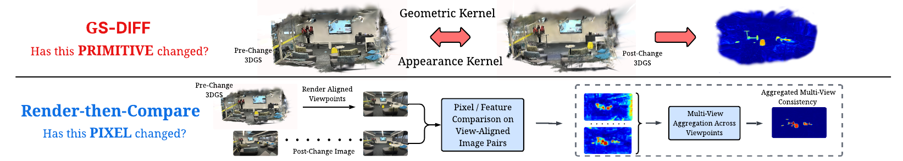
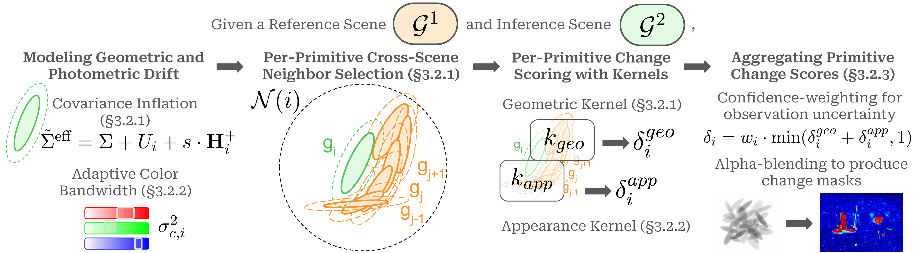
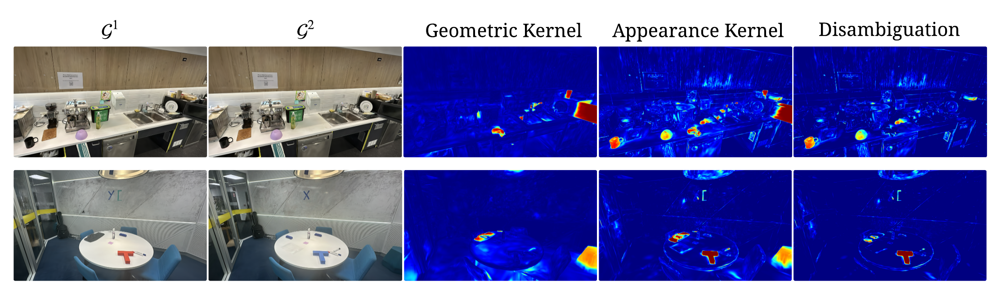
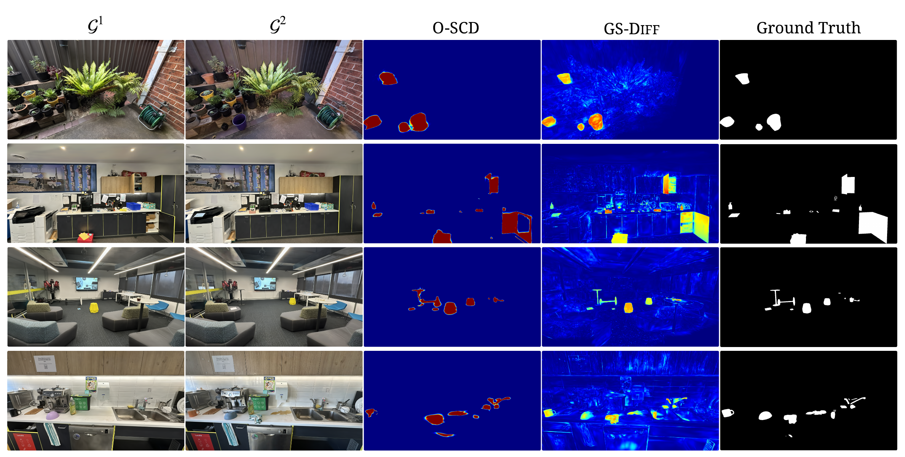

Rendered reference view, inference view, and GS-Diff change map for each scene.
Zen — Outdoor scene with complex background texture; GS-DIFF's change maps are multi-view consistent by construction.
Garden — Dense outdoor scene; GS-DIFF's can capture even thing structural changes such as the tail of the toy monkey.
Lounge — GS-DIFF performs similarly well in both indoor and outdoor scenes.
Meeting Room — A scene with many non-Lambertian surfaces where accurate geometric reconstruction is inherently hard.
Scene change detection methods built on Gaussian splatting universally follow a render-then-compare paradigm: the pre-change scene is rendered into 2D and compared against post-change images via pixel or feature residuals. This change detection problem with Gaussian Splatting has been treated as a question about pixels; we treat it as a question about primitives. We provide direct evidence that native primitive attributes alone — position, anisotropic covariance, and color — carry sufficient signal for scene change detection.
What makes primitive-space comparison hard is the under-constrained nature of Gaussian splatting representation: independent optimisations yield primitive solutions whose count, positions, shapes, and colors differ even where nothing has changed. We address this challenge with anisotropic models of geometric and photometric drift, complemented by a per-primitive observability term that reflects the extent to which each Gaussian is constrained by the camera geometry.
Operating directly on primitives gives our method, GS-Diff, two properties that distinguish it from render-then-compare methods. First, change maps are multi-view consistent by construction, where prior work had to learn this through an additional optimisation objective. Second, geometric and appearance changes are scored separately, identifying not just where but what kind of change occurred — distinguishing structural changes (e.g., an added object) from surface-level ones (e.g., a color change) without supervision or external model dependencies. On real-world benchmarks, GS-Diff surpasses the prior state-of-the-art approach by ~17% in mean Intersection over Union.

Figure 1. Prior multi-view SCD methods question pixels, comparing rendered viewpoint pairs in image space and learning to aggregate change evidence scattered across viewpoints (bottom). GS-Diff questions primitives, comparing two 3DGS reconstructions directly in primitive space (top). Multi-view consistency emerges by construction from the shared 3D representation, eliminating both per-view comparison and learned aggregation.
First method to detect scene changes directly in 3DGS primitive space — no rendering, no image comparison.
Uses only native Gaussian attributes — position, covariance, and color — requiring no foundation models or external training.
Surpasses the strongest prior method on the PASLCD benchmark.
Inherently separates structural from surface-level changes without supervision or auxiliary models.

Figure 2. The GS-Diff pipeline. We model the expected geometric and photometric drift between 3DGS representations, using the inflated covariance of each primitive to find its cross-scene neighbour set. A geometric kernel and appearance kernel evaluate change over the neighbour set to compute drift-aware change scores. These change scores are combined and weighted by observation uncertainty, and can then be rendered as change score maps for any viewpoint.
GS-Diff is the only method that reaches state-of-the-art performance without external learned features and with multi-view (MV) consistency as an inherent property. Best in bold, second best underlined.
| Method | No Learned Feat. | MV Consistency | mIoU ↑ | F1 ↑ |
|---|---|---|---|---|
| CYWS-2D | ✘ | — | 0.273 | 0.398 |
| GeSCD | ✘ | — | 0.477 | 0.611 |
| SplatPose+ | ✘ | — | 0.237 | 0.358 |
| SCAR-3D | ✘ | Learned | 0.191 | 0.289 |
| 3DGS-CD | ✘ | Learned | 0.209 | 0.339 |
| MV3DCD | ✘ | Learned | 0.478 | 0.628 |
| O-SCD | ✘ | Learned | 0.552 | 0.694 |
| GS-Diff (ours) | ✔ | By Construction | 0.644 | 0.758 |
| GS-Diff Oracle | ✔ | By Construction | 0.669 | 0.779 |
Each row introduces one design choice cumulatively. Drift modeling is the dominant contributor to performance.
| Phase | Variant | mIoU ↑ | Oracle mIoU | Rel. Gap (%) |
|---|---|---|---|---|
| Naïve | Euclidean NN (position + color) | 0.110 | 0.285 | 61.4 |
| Normalized Mahalanobis, raw Σ + Euclidean NN color | 0.034 | 0.266 | 87.2 | |
| Kernel | Unnormalized Mahalanobis, raw Σ + Euclidean NN color | 0.096 | 0.415 | 76.9 |
| Unnormalized Mahalanobis + fixed RBF color (σc=0.5) | 0.102 | 0.422 | 75.8 | |
| Drift | + representation ambiguity inflation U | 0.258 | 0.536 | 51.9 |
| + observation uncertainty via FIM | 0.465 | 0.611 | 23.9 | |
| + data-driven appearance bandwidth σc | 0.537 | 0.629 | 14.6 | |
| + confidence weighting ωi (full GS-Diff) | 0.644 | 0.669 | 3.7 |
GS-Diff inherently separates structural changes (geometry mismatch) from surface-level changes (appearance only) by keeping the geometric and appearance kernel scores separate — no supervision or auxiliary models required.

Figure 4. Change disambiguation results. GS-Diff correctly routes changed pixels to structural (e.g., added/removed objects) or surface-level (e.g., repainted surface) categories without any supervised training signal.
Balanced accuracy is the primary metric. GS-Diff achieves 0.87 balanced accuracy with high per-class recall. Results are near-identical for Fixed and Oracle thresholds, confirming routing is decoupled from threshold tuning.
| Thresholding | Balanced Acc. | Structural Prec. | Structural Rec. | Surface Prec. | Surface Rec. |
|---|---|---|---|---|---|
| Fixed (0.5) | 0.868 | 0.970 | 0.961 | 0.725 | 0.774 |
| Oracle | 0.866 | 0.968 | 0.959 | 0.726 | 0.773 |

Figure 5. Qualitative comparison with prior state-of-the-art render-then-compare methods. GS-DIFF produces more geometrically accurate change masks for two reasons. (1) Patch granularity: image-space approaches compare features from an external vision foundation model at its patch size (14 × 14 or 16 × 16 in pixels), which sets a floor on spatial resolution; primitive-space comparison is limited only by the fidelity of the representation itself. (2) Multi-view aggregation: learned multi-view objective converges to a consensus across views, smoothing the boundary in any single view; GS-DIFF's per-primitive scores are multi-view consistent by construction and preserve view-specific sharpness. The bottom row additionally shows our kernels detecting a surface-level change between semantically similar objects (bowl recolored pink-to-blue), which image-space methods often misses, as foundation-model features are largely invariant to such fine appearance changes in semantically similar objects.
@article{galappaththige2026gsdiff,
title = {From Pixels to Primitives: Scene Change Detection
in 3D Gaussian Splatting},
author = {Galappaththige, Chamuditha Jayanga and
Lai, Jason and
Patten, Timothy and
Dansereau, Donald and
Suenderhauf, Niko and
Miller, Dimity},
journal = {arXiv preprint arXiv:XXXX.XXXXX},
year = {2026}
}
This work was supported by the Australian Research Council Research Hub in Intelligent Robotic Systems for Real-Time Asset Management (ARIAM) (IH210100030) and Abyss Solutions. C.J., N.S., and D.M. also acknowledge ongoing support from the QUT Centre for Robotics.